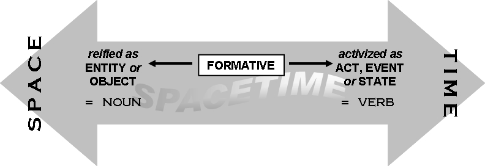

| 2.1 Grammatical Typology | 2.4 Parts of Speech |
| 2.2 Root and Stem Formation | 2.5 Note On Terminology |
| 2.3 Semantic Instantiation of Stems |
Morpho-phonology refers to how a language uses its phonemes
(meaningful sounds) and phonological features (e.g., stress, tone, etc.) to
generate patterns for word-formation and for morphological categories (e.g.,
singular versus plural, verb tense, etc.) to be applied to words.
2.1
GRAMMATICAL TYPOLOGY |
Ithkuil morpho-phonology is primarily agglutinative and secondarily synthetic. That is, the manner in which morpho-semantic stems, inflections and derivations are formed, and how those elements combine meaningfully into words, is primarily via the joining of one or more affixes (including prefixes, suffixes, infixes and interfixes) to a semantic root, where the affixes themselves are highly synthetic (i.e., combining numerous morphological categories together into a single phonological form).
2.1.1 The Structure of Ithkuil Words
As will be discussed later in Section 2.4, the part of speech in Ithkuil which corresponds to nouns and verbs in Western languages is called a formative. The morphological structure of the Ithkuil formative can be shown by the following formula:
(((Cv +) VL +) Cg/Cs +) Vr + (Cx/Cv + Vp/VL +) Cr + Vc (+ Ci +Vi) + Ca (+ VxC ) (+ Vf (+ Cb)) [+ tone] [+ stress]
The above terms, other than Cr, [tone] and [stress], refer to various consonantal or vocalic affixes. Cr corresponds to the word-root itself which is dicussed below in Section 2.2. All of the terms shown in gray are optional. However, as indicated by the pattern of parentheses in the formula, the presence of certain terms requires the presence of others.
The above morphological formula can be looked at as a series of numbered “slots” which will perhaps facilitate explanation of each term:
I |
II |
III |
IV |
V |
VI |
VII |
VIII |
IX |
X |
XI |
XII |
XIII |
XIV |
XV |
(((Cv) |
VL) |
Cg/Cs) |
Vr |
(Cx/Cv |
Vp/VL) |
Cr |
Vc |
Ci +Vi |
Ca |
VxC |
(Vf |
(’Cb)) |
[tone] |
[stress] |
| Phase + |
Valence |
Validation OR Aspect (+ Mood) |
Pattern + Stem + Function |
Incorp.Root OR Phase + Sanction (+ Illocution) |
Pattern + Stem + Designation of Incorp. Root OR Valence |
Root |
Case |
Illocution + Mood |
Essence + Extension + Perspective + Configuration + Affiliation |
Deriv. Suffix |
Context + Format |
Bias |
Version |
Designa- tion + Relation |
A brief, preliminary explanation of these terms is given in Table 3
below. Detailed explanation of these terms are found in succeeding
sections or subsequent Chapitres.
Table 3: Explanation of Terms within the Morphological Formula for Ithkuil Formatives
I |
Cv |
An word-initial consonantal prefix which indicates the categories of Phase (see Section 5.5) and Sanction (see Section 5.6). Both Phase and Sanction are mandatory categories, however the presence of Cv in a formative is optional (i.e., unmarked) if both the Phase and Sanction of the formative have their default values. If Cv is present in Slot I, then Slot II through IV (see below) must be filled and Slot III must be filled by Cs, not Cg. |
II |
VL |
A vocalic affix which shows a verbal category called Valence, discussed in Section 5.7. Valence is a mandatory category, however the presence of VL is optional (i.e., unmarked) if the formative’s valence has its default value and Slot I (Cv) is unfilled/unmarked. If VL is present, then Slots III and IV below must also be filled. |
III |
Cg/Cs |
A consonantal affix which indicates either of two categories: (1) Validation (see Section Section 5.9), in which case this term is referred to as Cg, or (2) Aspect, in which case this term is referred to as Cs. The actual phonological forms of Cg and Cs are distinct from one another so there is no confusion when interpreting which category is being conveyed. The presence of Cv in Slot I (see above) requires that Slot III be filled by Cs, not Cg. Aspect (Cs) is an optional category. It is possible for a formative to not carry any particular aspect, in which case the value of Cs (if present) will simply be a placeholder consonantal form. Validation (shown by Cg) is a mandatory category, however the presence of Cg is optional if the formative's valence has its default category. If the formative's validation is not its default value, but the presence of Cg is not allowed due to Slot III already being filled by Cs, then the word must be restructured to remove Cv from Slot I and to remove Cs from Slot III in order to allow the presence of Cg. The formative's Phase and Sanction (Cv) and Aspect (Cs) will instead be shown either by use of an adjunct (see Section 2.4.2 below), or by moving Cv and Cs to Slots V and XI respectively (if possible - see explanation for Slots V and XI below). The presence of either Cg or Cs in Slot III requires that Slot IV be filled. |
IV |
Vr |
A
vocalic “portmanteau” affix (i.e., conveying multiple types of
morphological information), indicating the following morphological
categories: Pattern and Stem (see Section 2.2.2 below), and Function (discussed in Section 5.1).
Pattern and Stem are mandatory for all formatives, whereas Format
occurs only if the formative carries an incorporated stem (see Cx in Slot V below). |
V |
Cx/Cv |
Slot V serves two possible functions: (1) Cx, a consonantal form indicating an incorporated root (discussed in Section 6.4) or, in the absence of an incorporated root, it becomes (2) the slot for Cv showing the formative’s Phase and Sanction (thus moving it from Slot I above). The presence of Cx or Cv in Slot V requires that Slot VI also be filled. If functioning as Cx, the formative must carry Format information shown by the term Vf in Slot XII below. If there is no Format shown in Slot XII, then any term in Slot V must be Cv, not Cx. If there is no incorporated root and the formative's Phase and Sanction have their default values or are already shown in Slot I, then Slot V is left empty (as well as Slot VI). |
VI |
Vp/VL |
Slot VI serves two possible functions: (1) Vp, a vocalic affix indicating the Stem and Pattern (see Section 2.2.2 below) as well as Designation
(see Section 3.7) of the incorporated root Cx in Slot V above, or, in the absence of an incorporated root, it becomes (2) the slot for VL
showing the formative’s Valence (thus moving it from Slot II above). If
there is no incorporated root then Slot VI is left empty along with
Slot V. |
VII |
Cr |
A mandatory consonantal form (from one to five consonants in length) which represents the semantic root of the formative (see Section 2.2 below). Cr cannot be -w-, -y-, -h-, -hw-, -hr-, -hh-, -hn-, -hm-, -lw-, -ly-, -rw-, -ry-, -řw-, or -řy-. |
VIII |
Vc |
This is a mandatory vocalic affix indicating the case of the formative. The category of Case is discussed in Chapitre 4. |
IX |
Ci +Vi |
This is a consonant + vowel term consisting of one of four consonantal forms (w-, y-, h-, or hw-) plus a vocalic form, the whole of which indicates the Mood and Illocution of the formative (see Sections 5.2 and 5.3
respectively). Mood and Illocution are mandatory categories but both
have default forms. If Mood and Illocution are in their default forms,
then Slot IX is usually left unfilled/unmarked. |
X |
Ca |
A
mandatory consonantal portmanteau affix indicating the following five
categories: Configuration, Affiliation, Perspective, Extension and
Essence. These categories are all discussed in Chapitre 3. |
XI |
Vx+C |
An optional derivational suffix of the form vowel+consonant(s)
which conveys additional morpho-semantic information. There are
approximately 200 such suffixes which can be combined with a formative
to expand the meaning of a word. These suffixes can also be multiply
added to a stem, i.e., two or more such affixes can appear on a stem.
These suffixes are analyzed at length in Chapitre 7. |
XII |
Vf |
A vocalic suffix which conveys the categories of Context (discussed in Section 3.6) and Format (discussed in Section 6.4). The presence of Format information requires that an incorporated root be present in the formative (i.e., the Cx term in Slot V above). In the absence of an incorporated root, Vf
conveys the category of Context only. While Context is mandatory, it
has a default value which, in the absence of Format and a Bias suffix in
Slot XIII, is unmarked (i.e., Slot XII is left empty). |
XIII |
’Cb |
A consonantal word-final suffix of the form glottal stop + consonant which indicates one of 48 Bias categories (discussed in Section 5.11).
Bias is an optional category and is left unmarked (i.e., unfilled) if
not present. However, if present, then Slot XII must also be filled. |
XIV |
[tone] |
The six morphologically relevant tones (see Section 1.3.2) of an Ithkuil formative indicate the category of Version (see Section 5.8), a mandatory category. |
XV |
[stress] |
As previously described in Section 1.3.3, there are four possible stress patterns for an Ithkuil formative, which convey the categories of Designation (see Section 3.7) and Relation (see Section 5.4). |
Based on the above morphological formula, we can see that the simplest structure for a formative is
Vr + Cr + Vc + Ca + tone+stress
as illustrated by the examples phal, eqoec, and ‾üaklaršlá below:
phal ‘tree’ LISTEN 
Vr = (a-),* indicating Pattern 1, Stem 1 of the root plus STATIVE function
Cr = -ph-, indicating the root: ‘branched/leaved plant’
Vc = -a-, indicating OBLIQUE case
Ca = -l, indicating NORMAL essence, DELIMITIVE extension, MONADIC perspective, UNIPLEX configuration, and CONSOLIDATIVE affiliation
tone = falling, indicating PROCESSUAL version
stress = penultimate**, indicating INFORMAL designation and UNFRAMED relation*Note that the full form is aphal, however when the value of Vr is word-initial a- for a formative with penultimate stress, this initial a- can be deleted.
**As explained in Section 1.3.3, monosyllabic words are considered to have penultimate stress for morpho-phonological purposes.
eqoec ‘regarding humankind’ LISTEN 
Vr = e-, indicating Pattern 1, Stem 2 of the root plus STATIVE function
Cr = -q-, indicating the root: ‘higher order life-form’
Vc = -oe-, indicating REFERENTIAL case
Ca = -c, indicating NORMAL essence, DELIMITIVE extension, ABSTRACT perspective, UNIPLEX configuration, and CONSOLIDATIVE affiliation
tone = falling, indicating PROCESSUAL version
stress = penultimate, indicating INFORMAL designation and UNFRAMED relation

‾üaklaršlá ‘it is/being a representation of the man-made courses/channels of a river that has dried up’ LISTEN 
Vr = üa-, indicating Pattern 3, Stem 1 of the root plus MANIFESTIVE function
Cr = -kl-, indicating the root: ‘water in natural motion’
Vc = -a-, indicating OBLIQUE case
Ca = -ršl(a), indicating REPRESENTATIVE essence, DEPLETIVE extension, MONADIC perspective, AGGREGATIVE configuration, and ASSOCIATIVE affiliation
tone = high, indicating COMPLETIVE version
stress = ultimate, indicating FORMAL designation and UNFRAMED relation
From the simpler formative structures above, we can examine the structure of increasingly complex words, e.g.,
Vr + Cr + Vc + Ci +Vi + Ca + Vx+Cs + Vf + ’Cb + tone + stress, as in:

Uiphawâtļûxe’ň? ‘Might it happen to be a large symbolic grove of trees?’ LISTEN 
Vr = (ui-), indicating Pattern 1, Stem 1 of the root plus MANIFESTIVE function
Cr = -ph-, indicating the root: ‘branched/leaved plant’
Vc = -a-, indicating OBLIQUE case
Ci+Vi = w+â, indicating INTERROGATIVE illocution plus SUBJUNCTIVE mood
Ca = -tļ, indicating NORMAL essence, DELIMITIVE extension, MONADIC perspective, DISCRETE configuration, and CONSOLIDATIVE affiliation
Vx+Cs = û+x, the SIZE suffix in 6th degree, translatable as ‘big, large’
Vf = e, indicating REPRESENTATIONAL context
Cb = ň, indicating COINCIDENTAL bias
tone = falling, indicating PROCESSUAL version
stress = penultimate, indicating INFORMAL designation and UNFRAMED relation
or Cg + Vr + Cx + Vp + Cr + Vc + Ca + Vx+Cs + Vf + tone + stress, as in:
hremsoqaiţsurkoi ‘purportedly by means of the value derived from all the varied attributes of humanity’ LISTEN 
Cg = hr-, indicating PURPORTIVE validation
Vr = e-, indicating Pattern 1, Stem 2 of the root plus STATIVE function
Cx = -ms-, indicating the incorporated root: ‘value/cost’
Vp = o, indicating Pattern 2, Stem 1, and INFORMAL designation of the incorporated root
Cr = -q-, indicating the main root: ‘higher order life-form’
Vc = -ai-, indicating INSTRUMENTAL case
Ca = -ţs-, indicating NORMAL essence, DELIMITIVE extension, ABSTRACT perspective, COMPOSITE configuration, and VARIATIVE affiliation
Vx+Cs = u+rk, the METONYMIC suffix in 9th degree, indicating the attributes/characteristics of the formative
Vf = oi, indicating AMALGAMATIVE context and AUTHORITATIVE format
tone = falling, indicating PROCESSUAL version
stress = penultimate, indicating INFORMAL designation and UNFRAMED relation
or a deliberately extreme example,
Cv + VL + Cs + Vr + Cx + Vp + Cr + Vc + Ca + Vx + Cs + Vf + ’Cb + tone + stress, as in:

/qhûl-lyai’svukšei’arpîptó’ks
‘...being hard to believe, after allegedly trying to go back to
repeatedly inspiring fear using rag-tag groups of suspicious-looking
clowns, despite resistance’ LISTEN 
Cv = qh, indicating ALLEGATIVE sanction plus REPETITIVE phase
VL = û, indicating RESISTIVE valence
Cs = l-ly, indicating REGRESSIVE aspect
Vr = ai’, indicating DYNAMIC function plus Pattern 1, Stem 2 for the main root
Cx = sv, indicating the incorporated root: ‘fear’
Vp = u, indicating INFORMAL designation plus Pattern 3, Stem 1 for the incorporated root
Cr = kš, indicating the main root: ‘fool/clown’
Vc = ei’a, indicating POSTCURSIVE case
Ca = rp, indicating NORMAL essence, DELIMITIVE extension, UNBOUNDED perspective, AGGREGATIVE configuration, and VARIATIVE affiliation
Vx + Cs = îpt-, the GENUINENESS/VERACITY suffix in 4th degree, indicating a suspicious-looking nature
Vf = o, indicating SCHEMATIC format and EXISTENTIAL context
Cb = ’ks, indicating SKEPTICAL bias
tone = rising, indicating INEFFECTUAL version
stress = ultimate, indicating FORMAL designation for the main root
Because many of the terms in the above morphological formula are optional, the reader might easily wonder how a speaker/reader of Ithkuil, when looking at or hearing an Ithkuil word, can possibly know which terms are actually shown in any given word, i.e., how to interpret from the given consonants and vowels in a particular word which of the optional morphological categories is being displayed or spoken. Or, in other words, how can one tell which slots are filled? In fact, such interpretation is indeed possible and is unambiguous due to the specific allowable consonant or vowel combinations allowed for each term, i.e., the specific consonantal or vocalic values allowed for one term are distinct from those allowed for another term which might occupy the same sequential position in a specific word. Also, as previously stated in Section 2.1.1 above and as indicated by the pattern of parentheses in the (((Cv +) VL +) Cg/Cs +) Vr + (Cx/Cv + Vp/VL +) Cr + Vc (+ Ci +Vi) + Ca (+ VxC ) (+ Vf (+ Cb)) [+ tone] [+ stress] morphological formula, the presence of certain terms e.g., VL, requires the presence of other terms (Ci + Vc), in order to maintain a discernible sequence which can be unambiguously differentiated.
2.2 ROOT AND STEM FORMATION |
All words in Ithkuil which translate into English as nouns or verbs are based on a monosyllabic stem, which in turn derives from a semantically abstract root. This process is explained in the sections below.
The root in Ithkuil forms the semantic basis from which actual noun/verb stems are derived. The root consists of a consonantal form, Cr, comprised of one to four consonants (e.g., -k-, -st-, -ntr-, -pstw-).Given Ithkuil phonotactic constraints (see Section 1.4) this gives approximately 3600 possible roots. (Note: roots of five consonants, e.g., -rpskw- are also phonotactically possible and available, but currently remain unassigned.) Cr cannot be a single glottal stop, nor w, y, h, hw, hr, hh, hn, hm, lw, ly, rw, ry, řw, or řy. The root occupies Slot VII of a formative’s morpho-phonological structure, as shown below.
I |
II |
III |
IV |
V |
VI |
VII |
VIII |
IX |
X |
XI |
XII |
XIII |
XIV |
XV |
(((Cv) |
VL) |
Cg/Cs) |
Vr |
(Cx/Cv |
Vp/VL) |
Cr |
Vc |
Ci +Vi |
Ca |
VxC |
(Vf |
(’Cb)) |
[tone] |
[stress] |
Phase + |
Valence |
Validation OR Aspect (+ Mood) |
Pattern + Stem + Function |
Incorp.Root OR Phase + Sanction (+ Illocution) |
Pattern + Stem + Designation of Incorp. Root OR Valence |
Root |
Case |
Illocution + Mood |
Essence + Extension + Perspective + Configuration + Affiliation |
Deriv. Suffix |
Context + Format |
Bias |
Version |
Designa- tion + Relation |
The root is the basic semantic unit in Ithkuil. For example, d- is a root whose semantic referent is ‘NAME/DESIGNATION’. Functional word-stems (or simply stems) are generated from the root via instantiation of the Vr- vocalic affix, as described below.
There are three stems associated with each root. It is at the level of stem that Ithkuil roots become actual words with instantiated meaning. Each stem in turn manifests itself in three separate Patterns. Both Pattern and Stem are shown by changes to the Vr- vocalic affix.
The three patterns are labeled Pattern 1, Pattern 2, and Pattern 3. Pattern is used to divide a stem into a tripartite grouping consisting of a holistic stem and two complementary sub-stems. An example would be the holistic stem spouse, with its two complementary sub-stems husband and wife. This holistic versus complementary distinction is discussed at length below in Section 2.3. This distinction of holistic versus complementary patterns is one way in which Ithkuil systematizes at the morphological level what in other languages constitute lexical distinctions (i.e., differences in word-choice when translating). It is one of the many ways by which Ithkuil can function fully as a conceptually sophisticated and subtle language while having such a small number of semantic word roots.
A formative’s Pattern and Stem are shown by the Vr affix in Slot IV, as previously described in Section 2.1.1. Besides showing a formative’s Pattern and Stem, Vr shows the morphological category of Function, discussed in Section 5.1.
I |
II |
III |
IV |
V |
VI |
VII |
VIII |
IX |
X |
XI |
XII |
XIII |
XIV |
XV |
(((Cv) |
VL) |
Cg/Cs) |
Vr |
(Cx/Cv |
Vp/VL) |
Cr |
Vc |
Ci +Vi |
Ca |
VxC |
(Vf |
(’Cb)) |
[tone] |
[stress] |
Phase + |
Valence |
Validation OR Aspect (+ Mood) |
Pattern + Stem + Function |
Incorp.Root OR Phase + Sanction (+ Illocution) |
Pattern + Stem + Designation of Incorp. Root OR Valence |
Root |
Case |
Illocution + Mood |
Essence + Extension + Perspective + Configuration + Affiliation |
Deriv. Suffix |
Context + Format |
Bias |
Version |
Designa- tion + Relation |
The values of Vr- by Stem and Pattern and Function are shown in Table 4 below.
Table 4: Values of Vr by Stem, Pattern, and Function
|
Pattern 1 |
Pattern 2 |
Pattern 3 |
||||||
|
Stem 1 |
Stem 2 |
Stem 3 |
Stem 1 |
Stem 2 |
Stem 3 |
Stem 1 |
Stem 2 |
Stem 3 |
Function (see Sec. 5.1) |
|||||||||
STATIVE |
(a) |
e |
u |
o |
ö |
î / û |
â |
ê |
ô |
DYNAMIC |
i |
ai |
ei |
au |
eu |
iu |
ia / ua |
ie / ue |
io / uo |
MANIFESTIVE |
ui |
ü / ou |
ëi |
ae |
ea |
oa |
üa / aì |
iù / uì |
iö / uö |
DESCRIPTIVE |
oi |
eo |
eö |
oe |
öe |
ëu |
üo / oì |
üe / eì |
üö / aù |
In the sections below where we analyze the semantics of stems, all examples are given in the STATIVE function, as this corresponds to the most common (or default) function of a formative. Thus, the forms we will analyze are:
Pattern 1 |
Pattern 2 |
Pattern 3 |
||||||
Stem 1 |
Stem 2 |
Stem 3 |
Stem 1 |
Stem 2 |
Stem 3 |
Stem 1 |
Stem 2 |
Stem 3 |
(a)C- |
eC- |
uC- |
oC- |
öC- |
îC- / ûC- |
âC- |
êC- |
ôC- |
where C- represents the root consonant form Cr.
We can now examine how each root instantiates meaning into the above array of stems. We will start with the three stems associated with Pattern 1; these are the holistic stems. This will be followed in a subsequent section by an analysis of the twelve stems associated with Patterns 2 and 3, the complementary stems.
The three stems for Pattern 1 are designated by the Vr affixes (a-), e-, and u- respectively. Thus, the root -d- ‘NAME/DESIGNATION’ generates the following stems:
1. (a)d-‘name of something or someone; to name something or someone’
2. ed- ‘designation or reference; to assign a designation, to refer to something’
3. ud- ‘a (temporary or informal) reference, “nickname”; to give a (temporary or informal) reference or name to, to (temporarily) nickname’
The semantic relationship between each stem and the underlying root is specific to each root. Nevertheless, certain patterns are common. Stem 1 usually refers to the most fundamental, basic, generalized, or common manifestation of the root concept, while Stem 2 is a more specific application or tangible manifestation thereof, or otherwise a subset of the meaning of Stem 1. Stem 3 may represent yet a further manifestation of the root, a further subset of Stem 1, or a tangential or related concept. For example, compare the relationship between the individual stems for the root -d- above with that of the root -x- (‘VISION/SIGHT’) below.
1. (a)x- ‘a sighting, an act of seeing something; to see something’
2. ex- ‘an eye; to be an eye/become an eye/use one’s eye, etc.’
3. ux- ‘an image in one’s mind; to visualize, to picture in one’s mind’
Note that each stem carries both a nominal (noun) and a verbal meaning. This will be important later when we discuss parts of speech and nominal/verbal morphology.
Any Ithkuil stem is capable of being further broken down into two complementary stems which represent mutually exclusive component parts or aspects of the main stem. Many Ithkuil stems which translate common English nouns and verbs are, in fact, such complementary derivatives, rather than being holistic word-stems.
By “complementary” is meant that the manifestation of a concept appears in any given context as either one sort of entity or another, but never both simultaneously; yet, neither manifestation can be considered to be a discrete contextual whole without the existence of the other. In Ithkuil, for example, words such as male, night, speech, sit, and happen are not considered basic concepts, but rather are parts of greater holistic concepts, existing in complementary relationship to another part, the two together making up the whole.
Thus, Ithkuil lexical structure recognizes that the word male has no meaning in and of itself without an implicit recognition of its complementary partner, female, the two words mutually deriving from a more basic, holistic concept, translatable into English as living being. Similarly, the word night(time) derives along with its complement day(time) from the underlying concept translatable as day (i.e., a 24-hour period), while the concept of speak(ing) divides into complementary concepts of talking (focusing on the physical production of oral sound) versus saying/telling (focusing on the communicative content of oral sound).
Actions, too, are not exempt from this principle of complementarity, an example being the relationship between sit and seat; one has no meaning without an implicit and joint partnership with the other, i.e., one cannot sit unless one sits upon something, and whatever one sits upon in turn functions as a seat. Another example involves the word happen or occur, which Ithkuil recognizes as having no real meaning without the attendant implication of consequence or result, the two being complementary components of a holistic concept roughly translatable as event or situation.
2.3.2.1 Using Patterns 2 and 3 to Derive Complementary
Stems. The first complementary stem is derived from the holistic stem
by shifting the values of Vr to Pattern 2, i.e., o-, ö-, and î- (or û-), while the second complementary stem is derived by shifting Vr to Pattern 3, i.e., â-, ê-, and ô-. Several examples of complementary stem derivation
are given below:
|
|
|
|
2.3.2.2 Complementary Stems in Translation. As illustrated
above, the structure of Ithkuil holistic vs. secondary complementary roots often
neatly parallels English lexical distinctions, e.g., ‘speak/speech’
breaking down into the physical aspect of ‘talking’ versus the communicative
aspect of ‘saying/telling’ or ‘person’ breaking down
into ‘male’ and ‘female.’ However, it is often the case
that this principle of complementarity creates a semantic situation which is
counterintuitive to Western semantic notions.
For example, let us analyze the root -mm- ‘NUCLEAR FAMILY MEMBER’. While most languages would consider the concept parent as fundamentally opposite from the concept child and assign separate word-roots to each, Ithkuil recognizes that one implies the other. No person can be a parent unless they've had a child, just as any child must have (or have had) parents. This, then, constitutes an archetypal complementary relationship, the whole two-sided nature of which is referred to by the holistic stem -mm-. One way to interpret the meaning, then, of -mm- is to say that the word means both ‘parent’ and ‘child,’ which of course strikes one as being problematical, perhaps even nonsensical. But in fact, the word does not mean either ‘parent’ or ‘child,’ but rather a person who is one of the members of a parent-child relationship, i.e., a member of a nuclear family. With such a root, Stem 2 and Stem 3 in turn subdivide Stem 1 into the further complementary derivatives of male and female. Such “bi-level” derivations of complementary concepts using Stem 2 and Stem 3 are common in Ithkuil root/stem derivation. Here then are the actual meanings of the stems for -mm-.
Holistic
Stem |
1st
Complementary Stem |
2nd
Complementary Stem |
|
| Stem 1 | amm- nuclear family member |
omm-: parent |
âmm-: child (offspring) |
| Stem 2 | emm-: male nuclear family member |
ömm-: father |
êmm-: son |
| Stem 3 | umm-: female nuclear family member |
ûmm-: mother |
ômm-: daughter |
Additional conceptual complementary pairs which would be contained within
single Ithkuil lexical roots are illustrated by the following examples:
Holistic
Concept |
Complementary
Concepts |
|
| eating | food | ingestion |
| think, act of thinking | a thought (thing considered) | process of consideration |
| liquid | fluid (= ontological nature) | wet[ness] (=defining attribute) |
| measuring | a measurement | process of measuring |
| transference of possession | giving | taking |
| traversal between points | coming, arrival | going, departure |
| commercial transaction | buying | selling |
2.4
PARTS OF SPEECH |
Ithkuil has only two parts of speech: formatives and adjuncts. While there are words which function as nouns and verbs, such nouns and verbs derive morphologically from the same grammatical stem (its nominal or verbal function or meaning being dependent on the particular morpho-semantic context), hence the term formative. This process of noun/verb derivation from formatives is discussed in detail in Section 2.4.1 below. Note that there are no adjectives, adverbs, prepositions, pronouns, determiners, conjunctions, particles or interjections in Ithkuil, at least not at any autonomous lexical level that can be termed a part of speech. The equivalents to, or substitutes for, these latter Western grammatical notions all exist within the formative-adjunct morphological paradigm.
Another dissimilarity with Western languages is that there are no irregular or defective forms; all formatives and adjuncts follow the same inflectional and derivational rules without exception and all formatives are theoretically capable of semantic denotation for every inflectional or derivational category, i.e., all inflectionally or derivationally possible words theoretically exist and have meaning (although, in actuality, some forms will of course be semantically anomalous, redundant, contrived, or distinguish shades of meaning that are contextually unnecessary).
The stem formed as per the discussion in Section 2.3 above constitutes the grammatical part of speech termed the formative. All formatives, without exception, can function as both nouns or verbs, and the distinction as to whether a formative is to be interpreted as a noun or a verb can only be made by analyzing its morpho-syntactic relationship to the rest of the sentence. Consequently, there are no stems/formatives that refer only to nouns or only to verbs as in Western languages. The formative aklá- illustrated above in Section 2.3.2 means both ‘river’ and ‘to flow/run (as a river)’ with neither meaning being seen as more intrinsic or fundamental, nor one deriving from the other. Such hierarchies of nominal over verbal meaning (or vice-versa) arise only in translating Ithkuil to English or other Western languages, where such nominal versus verbal lexical constraints are inherent. Often, the interpretation or translation of an Ithkuil formative exclusively into a noun or verb form is arbitrary.
The reason why nouns and verbs can function as morphological derivatives of a single part of speech is because Ithkuil morpho-semantics does not see nouns and verbs as being cognitively distinct from one another, but rather as complementary manifestations of an idea existing in a common underlying semantic continuum whose components are space and time. As in physics, the holistic continuum containing these two components can be thought of as spacetime. It is in this continuum of spacetime that Ithkuil instantiates semantic ideas into lexical roots, giving rise to the part of speech termed the formative. The speaker then chooses to either spatially “reify” this formative into an object or entity (i.e., a noun) or to temporally “activize” it into an act, event, or state (i.e., a verb). This complementary process can be diagrammed as follows:

Besides formatives, the other part of speech is the adjunct. Adjuncts are so named because they operate in conjunction with adjacent formatives to provide additional grammatical information about the formative, somewhat like auxiliary verbs in English (e.g., “may, will, would, do, have”) or like noun determiners (e.g., “the, this, those”).
Adjuncts are formed from one or more consonantal and/or vocalic affixes, combined agglutinatively. There are several different types of adjuncts, described in detail in Chapitre 6 and Chapitre 8. These include:
2.5
NOTE ON TERMINOLOGY |
While this Chapitre has mentioned a few specific morphological categories in passing, beginning with Chapitre 3: Basic Morphology, morphological (i.e., grammatical) categories will be discussed in detail. It should be noted that, given the extensive array of overt morphological categories in Ithkuil, the terminology used in naming these categories is often arbitrary. Where a category functions similarly to a familiar linguistic category, the name of that category has been appropriated. Elsewhere, linguistic terminology from Indo-European, Uralic, Amerindian or Caucasian grammar has been appropriated out of convenience, often with only a small similarity of function. In still other instances, I have contrived my own grammatical nomenclature.
©2004-2011 par John Quijada. Vous pouvez copier ou extraire n'importe quelle partie des contenus de ce site web pour une utilisation privée, individuelle ou personnelle, qui est par nature non-commerciale et non pour des objectifs de profits. Autremement, vous pouvez copier ou extraire de brèves parts des contenus de ce site web dans des articles, papiers, pages webs, publiées, accessibles sur le web, ou distribué commercialement; pour des objectifs de révision, de commentaire, ou d'analyse; à condition que vous en donniez la pleine attribution à l'auteur de ce site web.